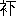
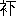

| 経つくゑ | |
| 樋口 一葉 | |
| (2014) | |
經つくゑ
樋口一葉
｟一｠
哀
れ手向
の花
一枝
に千年
のちぎり萬年
の情
をつくして、誰
れに操
の身
はひとり住
、あたら美形
を月花
にそむけて、世
は何時
ぞとも知
らず顏
に、繰
るや珠數
の緒
の引
かれては御佛
輪廻
にまよひぬべし、ありしは何時
の七夕
の夜
、なにと盟
ひて比翼
の鳥
の片羽
をうらみ、無常
の風
を連理
の枝
に憤
りつ、此處
閑窓
のうち机上
の香爐
に絶
えぬ烟
りの主
はと問
へば、答
へはぽろり
襦袢
の袖
に露
を置
きて、言
はぬ素性
の聞
きたきは無理
か、かくすに顯
はるヽが世
の常
ぞかし。
さすれば夢
のあともなけれど、悟
らぬ先
の誰
れも誰
れも思
ひを寄
せしは名
か其人
か、醫科大學
の評判男
に松島忠雄
と呼
ばれて其頃
二十七か八か、名
を聞
けば束髮
の薔薇
の花
やがて笑
みを作
り、首卷
のはんけち俄
かに影
を消
して、途上
の默禮
とも千歳
の名譽
とうれしがられ、娘
もつ親
幾人
に仇敵
の思
ひをさせて我
が聟
がねにと夫
れも道理
なり、故郷
は靜岡
の流石
に士族出
だけ人品
高尚
にて男振
申分
なく、才
あり學
あり天晴
れの人物
、今
こそ内科
の助手
といへども行末
の望
みは十指
のさす處
なるを、これほどの人
他人
に取
られて成
るまじとの意氣
ごみにて、聟
さま拂底
の世
の中
なればにや華族
の姫君
、高等官
の令孃
、大商人
の持參金
つきなど彼
れよ是
れよと申込
みの口〻
より、小町
が色
を衒
らふ島田髷
の寫眞鏡
、式部
が才
にほこる英文和譯
、つんで机上
にうづたかけれども此男
なんの望
み有
りてか有
らずか、仲人
が百
さへづり聞
ながしにして夫
れなりけりとは不審
しからずや、うたがひは懸
かる柳闇花明
の里
の夕
べ、うかるヽ先
きの有
りやと見
れど品行方正
の受合人
多
ければ事
はいよいよ闇黒
になりぬ、さりながら怪
しきは退院
がけに何時
も立寄
る某
れの家
、雨
はふれど雪
は降
れど其處
に轅棒
おろさぬ事
なしと口
さがなき車夫
の誰
れに申せしやら、某
から某
と傳
はりて想像
のかたまりは影
となり形
となり種々
の噂
となり、人
知
れず氣
をもみ給
ふ御方
もありし、其中
に別
けて苦勞性
のあるお人
しのびやかに跡
をやつけ給
ひし、探
ぐりに探
ぐれば扨
も燈臺
のもと暗
らさよ、本郷
の森川町
とかや神社
のうしろ新坂通
りに幾搆
への生垣
ゆひ廻
せし中
、押
せば開
らく片折戸
に香月
そのと女名
まへの表札
かけて折々
もるヽ琴
のしのび音
、軒端
の梅
に鶯
はづかしき美音
をば春
の月夜
のおぼろげに聞
くばかり、ちらり姿
は夏
の簾
ごし憎
くや誰
れゆゑ惜
しみてか藥師
さまの御縁日
にそヾろあるきをするでもなく、人
まち顏
の立姿
かどに拜
みし事
もなけれど美人
と言
ふ名
この近傍
にかくれなしと聞
くは、扨
こそ彌々
學士
の外妾
か、よしや令孃
ぶればとてお里
はいづれ知
れたもの、其樣
なものに鼻毛
よまれて果
は跡
あしの砂
の御用心
さりとてはお笑止
やなどヽ憎
くまれ口
いひちらせど眞
の處
は妬
し妬
しの積
り、かヽる人々
の瞋恚
のほむらが火柱
などヽ立昇
つて罪
もない世上
をおどろかすなるべし。
｟二｠
黒
ぬり塀
の表
かまへとお勝手
むきの經濟
は別
ものぞかし、推
はかりに人
の上
は羨
やまぬ物
よ、香月左門
といひし舊幕臣
、彼
の學士
の父親
とは 
の肩
をならべし間
なるが、維新
の變
に彼
れは靜岡
のお供
、これは東臺
の五月雨
にながす血汐
の赤
き心
を首尾
よく顯
はして露
とや消
えし、水
さかづきして別
れし限
りの妻
へ形見
が此美人
なり、人
の不幸
は生
れながらに後家
さまの親
を持
ちて、すがる乳房
の甘
へながらも父
といふ味夢
にも知
ず、物
ごヽろ知
るにつけて親
といへば二人
ある他人
のさまの羨
やましさに、いとしき事
とひかけては幾度
母
の袖
しぼらせしが、その母
にも又
十四といふとし果敢
なく別
れて今
は身
一つのいたはしさ、かの學士
どの其病床
に不圖
まねかれて盡力
したるが原因
となり、くり返
す昔
しのゆかりも捨
てがたく、引
つヾいて行通
しけるが、見
るにも聞
くにも可愛想
なり氣
のどくなり、これが若
しもお俠
ん娘
の飛
びかへりなどならば知
らぬ事
、世
といはヾ門
の戸
の外
をも見
ず、母
さまとならではお湯
にも行
かじ、觀音
さまのお參
りもいやよ、芝居
も花見
も母
さま御
一處
ならではと此
一トもとのかげに隱
くれて、姿
こそ嶋田
の大人
づくらせたれど正
の處
は人形
だいて遊
びたきほどの嬰兒
さまが俄
かに落
し木
の下
の猿
同
やう、涙
のほかに何
の考
へもなくお民
と呼
ぶ老婢
の袖
にすがつて、私
しも一處
に棺
に入
れよとて聞
きわけもなく泣
き入
りし姿
のあくまであどけなきが不愍
にて、素
より誰
れたのまねば義務
といふ筋
もなく、恩
をきせての野心
もなけれど夫
れより以來
の百事萬端
、身
に引
うけて世話
をすること眞
の兄弟
も出來
ぬ業
なり、これを色眼鏡
の世
の人
にはほろ醉
の膝
まくらに耳
の垢
でも取
らせる處
が見
ゆるやら、さりとは學士
さま寃罪
の訴
へどころもなし。

の肩
をならべし間
なるが、維新
の變
に彼
れは靜岡
のお供
、これは東臺
の五月雨
にながす血汐
の赤
き心
を首尾
よく顯
はして露
とや消
えし、水
さかづきして別
れし限
りの妻
へ形見
が此美人
なり、人
の不幸
は生
れながらに後家
さまの親
を持
ちて、すがる乳房
の甘
へながらも父
といふ味夢
にも知
ず、物
ごヽろ知
るにつけて親
といへば二人
ある他人
のさまの羨
やましさに、いとしき事
とひかけては幾度
母
の袖
しぼらせしが、その母
にも又
十四といふとし果敢
なく別
れて今
は身
一つのいたはしさ、かの學士
どの其病床
に不圖
まねかれて盡力
したるが原因
となり、くり返
す昔
しのゆかりも捨
てがたく、引
つヾいて行通
しけるが、見
るにも聞
くにも可愛想
なり氣
のどくなり、これが若
しもお俠
ん娘
の飛
びかへりなどならば知
らぬ事
、世
といはヾ門
の戸
の外
をも見
ず、母
さまとならではお湯
にも行
かじ、觀音
さまのお參
りもいやよ、芝居
も花見
も母
さま御
一處
ならではと此
一トもとのかげに隱
くれて、姿
こそ嶋田
の大人
づくらせたれど正
の處
は人形
だいて遊
びたきほどの嬰兒
さまが俄
かに落
し木
の下
の猿
同
やう、涙
のほかに何
の考
へもなくお民
と呼
ぶ老婢
の袖
にすがつて、私
しも一處
に棺
に入
れよとて聞
きわけもなく泣
き入
りし姿
のあくまであどけなきが不愍
にて、素
より誰
れたのまねば義務
といふ筋
もなく、恩
をきせての野心
もなけれど夫
れより以來
の百事萬端
、身
に引
うけて世話
をすること眞
の兄弟
も出來
ぬ業
なり、これを色眼鏡
の世
の人
にはほろ醉
の膝
まくらに耳
の垢
でも取
らせる處
が見
ゆるやら、さりとは學士
さま寃罪
の訴
へどころもなし。
今
の世
の女子教育
を賛成
といひがたき心
よりお園
にも學校
がよひ爲
せたくなく、廻
り路
でもなき歸宅
がけの一時間
を此家
に寄
りては讀書
算術
、思
ふやうに教
へて見
れば記憶
もよく分
りも早
く、學士
はいよ〳〵可愛
がりしが、お園
すこしの感
じもなく、有
がたし嬉
しなど口
の先
に出
すどころか顏
を見
るさへ嫌
やがりて、日〻
の稽古
にも書物
の事
より外
に問
ふことの無
きは勿論
、返來
をさへ打
とけて言
ひし事
はなく、強
て問
へば泣
き出
しさうな景色
を見
るお民
きの毒
さかぎりなく、何歳
までも嬰兒
さまで致
しかたが御座
りませぬ、流石
に氣
のおけるお他人
には少
し大人
らしくお成
り遊
ばせど、お心安
だての我
まヽか、甘
へ氣味
であの通
りの御遠慮
なさ、ちと御呵
り遊
ばして下
さりませと極
り文句
に花
を持
たすれど學士
は更
に氣
にも止
めず、その幼
なきが尊
ときなり、反對
に跳
かへられなばお民
どのにも療治
が六ツかしからん、園
さま我
れに遠慮
は入
らず、嫌
やな時
は嫌
やといふがよし、我
れを他人
の男
と思
はず母樣
同
やう甘
へ給
へと優
しく慰
さめて日毎
に通
へば、なほさら五月蠅
く厭
はしく車
のおとの門
に止
るを何
よりも氣
にして、それお出
と聞
がいなや、勝手
もとの箒
に手拭
をかぶらせぬ。
｟三｠
お民
は此家
に十年
あまり奉公
して主人
といへど今
は我
が子
に替
らず、何
とぞ此人
を立派
に仕
あげて我
れも世間
に誇
りたき願
ひより、やきもき
と氣
を揉
むほど何心
なきお園
の体
のもどかしく、どうした物
と考
へ、困
つたものと歎
き、はては意見
に小言
を交
ぜて或
る日
さまざま言
ひ聞
かせぬ。
何時
かは言
はふと存
じたれど、お前
さまといふ御人
には呆
れまする、是
れが五
つや十
の子供
ではなし、十六といへばお子樣
もつ人
もありますぞや、まあ考
へて御覽
なされお母樣
がお病沒
から此
かた、足
かけ三年
の長
の間
に松島
さまが何
れほど盡
して下
されたと思
しめす、私
しでさへ涙
がこぼれるほど嬉
しきにお前
さまは木
か石
か、さりとは不人情
と申ものなり、お覺
えがある筈
なれど一々申さねばお分
りになるまじ、お身寄
り便
りのなきお前
さまの身
を案
じて、人
は教
へが肝賢
の［＃「肝賢の」はママ］
ものなるに言
はヾ園
さまなどは今
が白糸
、何
の色
にも染
まりやすければ、學校
かよひに宜
からぬ友
でも出來
てはならず、一切
我
れに任
かせてまあ見
て居
てくれと親切
に仰
しやつてお師匠
さまから毎日
のお出稽古
、月謝
を出
して附
け屆
けして御馳走
して車
を出
して、あがめ奉
る先生
でも雪
や雨
には勿論
の事
、三度
に一度
はお斷
りが常
のものなり、それを何
ぞや駄々
つ子
樣
の御機嫌
とり〴〵、此本
一冊
よみ終
らば御褒美
には何
を參
らせん、手
ならひが能
く出來
たれば此次
には文
を書
きて見
せ給へと勿体
ない奉書
の繪
半切
れを手遊
に下
された事
忘
れはなさるまい、斯
う申さばお前
さまのお心
には何
の彼
んな物
たヽきつけて返
したしと思
しめすか知
らねど、紙
一枚
にも眞實
のこもるお志
しを頂
く物
ぞかし、其御恩
を何
とも思
はず、一年
［＃ルビの「れん」はママ］
といふ三百六十五日打通
して、好
い顏
どころか普通
の暑
い寒
いも滿足
には仰
しやらず、必竟
あの方
なればこそお腹
もたてず氣
にも懸
けず可愛
がつて下
さるものヽ、第
一天道
さまの罸
が當
らずには居
りませぬ、昨日
も此近傍
の噂
を聞
けば松島
さまは世間
で評判
の方
、奧
さま持
たうなら撰
り取
り見
どりに山
ほどなれど何方
もお斷
りで此方
へのお出
は孃樣
の上
にばかり日
の照
りが違
うか、何
といふお幸福
と燒
もちやいて羨
みますぞや、そのお人
に捨
てられたらお前
さままあ何
と遊
ばす、お泣
きなさるはお腹
がたつか、お怒
りになつてもよし、民
は申だけは申ます、惡
るくお聞
き遊
ばせば夫
れまで、さりとは方圖
のなきお我
まヽと思
ひ切
つて呵
りつけしが是
れも主
思
ひの一部
なり、もとよりお園
に惡
る氣
のあるではなく唯
おさな子
の人
ぎらひして、抱
かれるを嫌
やがり、あやされヽば泣
くと同
じく、何故
か其人
に氣
が合
はず去
りとて格別
に仇
をして困
らせんなどヽ念
の入
りし憎
くさでもなく、まこと世間
見
ずの我
まヽから起
りし處爲
なれば、言
はれるにつけて何
と言譯
の理由
もなく、口惜
しきか悲
しきか恥
かしきか無茶苦茶
に泣
いて顏
もあげぬを、お民
なほも何事
をかいはんとする折
門
にとまる例
の車
の音
、それお出
なり今日
こそはお優
しく遊
ばせよ。
｟四｠
園
さまはどうなされた今日
はまだ顏
が見
えぬと問
はれてまさかに、今
までこれ〳〵で次
の間
に泣
いて居
られますとも言
ひがたければ、少々
御不加减
で、然
しもう宜
しう御座
りませうほどに、まあお茶
を一つなどヽ民
は其塲をつくろひぬ。
學士
眉
を皺
めて夫
れは困
つたもの、全体
が健康
といふ質
でなければ時候
の替
り目
などは殊
さら注意
せねば惡
るし、お民
どの不養生
をさせ給ふな、さてと我
れも急
に白羽
の矢
が立
ちて、遠方
へ左遷
と事
が極
まり今日
は御風聽
ながらの御告別
なりと譯
もなくいへばお民
あきれて、御串談
をおつしやりますな、いや串談
ではなし札幌
の病院長
に任
じられて都合次第
明日
にも出立
せねばならず、尤
も突然
といふではなく斯
うとは大底
しれて居
りしが、何
か驚
かせるが苦
るしさに結局
いはねばならぬ事
を今日
までも默
つて居
りしなり、三年
か五年
で歸
るつもりなれども其
ほどは如何
か分
らねばまづ當分
お別
れの覺悟
、それにつけても案
じられるは園樣
のこと、何
の余計
の世話
ながら何故
か最初
から可愛
くて眞實
の處
一日見
ぬも氣
になる位
なれど、さりとて何時
來
ても喜
ばれるでもなく、結局
あれほど厭
やがるものを氣
の毒
なと氣
のつかぬでもなけれど、如何
かして天晴
れの淑女に育
てヽ見
たく、自惚
れの言
ひ分
と笑
ひ給
はんが兎
に角
今日
まで嫌
やがられに來
しなり、まづ學問
といふた處
が女
は大底
あんなもの、理化學政法
などヽ延
びられては、お嫁
さまの口
にいよ〳〵遠
ざかるべし、第
一皮相
の學問
は枯木
に造
り花
したも同
じにて眞心
の人
は悦
はぬもの、よしや深山
がくれでも天眞
の花
の色
は都人
を床
しがらする道理
なれば、此
うへは優美
の性
をやしなつて徳
をみがく樣
に教
へ給へ、我
れ此地
に居
たりとて根
からさつぱり談合
の膝
にも成
るまじきが、これからはいよ〳〵お民
どの大役
なり、前門
の虎
、後門
の狼
、右
にも左
にも怕
らしき奴
の多
き世
の中
、あたら美玉
に疷
をつけ給
ふは、園
さまにも言
ひきかせたきこと多
くあれど我
が口
よりいはヾ又
耳
に兩手
なるべし、不思議
に縁
のない人
に縁
があるか馬鹿
らしきほど置
いてゆくが嫌
やな氣持
と、笑
つてのけながら調子
がいつもほど冴
えては聞
えず。
散々
のお民
が異見
に少
し我
が非
を知
り初
し揚句
、その人
は俄
かに別
れといふ、幼
なき心
には我
が失禮
の我
まヽを憎
くみて夫故
に遠國
へでも行
かれるやうに悲
しく、侘
がしたれけれど障子
一重
を出
る時機
がなく、お民
が最初
に呼
んで呉
れし時
すこしひねくれ
てより拍子
ぬけがして今更
には馳
け出
しもされず、其
うちにお歸
りにならば何
とせん、もう逢
つては下
さらぬかなどヽ敷居
の際
にすり寄
つてお園
の泣
けるも知
らず、學士
はその時
つと起
つて、今日
はお名殘
なるに切
めては笑
ひ顏
でも見
せて給
はれとさらり
障子
を明
くれば、おヽ此處
にか。
｟五｠
左樣
ないてくれては困
る、お民
どのも同
じやうに何
の事
ぞ、もう逢
はれぬと言
ふでもなきに心細
き事
いひ給
ふな、園
さま何
も詫
びらるヽ事
はなし、お前
さまの事
は宜
しくお民
が承知
して居
れば少
しも心配
の事
はあらず、唯
これまでと違
ひて段々
と大人
になり世間
の交際
も知
らねばならず、第
一に六づかしきは人
の機嫌
なり、さりとて諂
ひの草履
とりも餘
りほめた話
しではなけれど开處
が工合
ものにて、清淨
なり無垢
なり潔白
なりのお前樣
などが、右
をむくとも左
を向
くとも憎
くむ人
は無
き筈
なれど夫
れでは世
が渡
られず、我
れも矢張
り其中間
の一枚板
［＃ルビの「ヽ」は底本では上下逆］
にて使
ひ道
が不向
きなれども流石
に年
の功
といふものか少
しはお前
さまより人
が惡
るし、さりとて惡
るく成
り過
ぎては困
れど過不及
の取
かぢは心
一つよく考
へて應用
なされ、實
の處
出立
は明後日
、支度
も大方
出來
たれば最早
お目
にかヽるまじく隨分
身躰
をいとひて煩
ひ給ふな、此上
にお頼
みは萬々
見送
りなどして下
さるな、さらでだに泣
き男
の我
れ朋友
の手前
もあるに何
かをかしく察
られてもお互
に詰
らず、さりながらお寫眞
あらば一枚
形見
に頂
きたし此次
出京
する頃
には最
はや立派
の奧樣
かも知
れず、それでも又
逢
つて給
はるかと顏
をのぞけば、膝
に泣
き伏
して正体
もなし、夫
れほど別
れるがお嫌
やかと背
を撫
せられて默頭
づく可愛
さ、三年目
の今日
今
さらに寧
いつもの愁
らきが増
しなり。
柔
かき人
ほど氣
はつよく學士
人々
の涙
の雨
に路
どめもされず、今宵
は切
めてと取
らへる袂
を優
しく振切
つて我家
へ歸
れば、お民
手
の物
を取
られしほど力
を落
して、よしや千里
が萬里
はなれるとも眞實
の親子
兄弟
ならば何時
歸
つて何
うといふ樂
しみもあれど、ほんの親切
といふ一筋
の糸
にかヽつて居
し身
なれば、遠
ざかるが最期
もう縁
の切
れしも同
じこと取
りつく島
の頼
みもなしと、我
れ振
りすてられしやうな歎
きにお園
いよ〳〵心細
く、母親
の別
れに悲
しき事
を知
り盡
して膓
もみ切
るほど泣
きに泣
きしが今日
の思
ひは夫
れとも變
りて、親切
勿体
なし、殘念
などヽいふ感念
が右往左往
に胸
の中
を搔
き廻
して何
が何
やら夢
の心地
、さりとて其夜
は寐
らるヽところならず、強
ひて床
へは入
りしものヽ寐間着
も着
かへず横
にもならず、さてつく〴〵と考
へれば目
の前
に晝間
の樣々
が浮
かびて、我
れは知
らねど胸
にや刻
まれし學士
が言
ひし詞
一言
半句
も忘
れず、歸
り際
は此袖
をかく捉
らへて待
つとし聞
かば今
かへり來
んと笑
ひながらに仰
せられし被
のお聲
も最
う聞
くことは出來
ず、明日
からは車
のおとも止
まるまじ、思
へば何故
に彼
の人
のあの樣
に嫌
やなりしかと長
き袂
を打
かへし打
かへし見
る途端
、紅絹
の八ツ口
ころ〳〵と洩
れて燈下
に耀
やく黄金
の指輪
、學士
が左
の藥指
に［＃「藥指に」は底本では「樂指に」］
先
のほどまで光
りしものなり。
｟六｠
莟
みと思
ひし梢
の花
も春雨
一夜
だしぬけにこれはこれはと驚
かるヽ物
なり、時機
といふものヽ可笑
しさにはお園
の少
さき胸
に何
を感
ぜしか、學士
が出立後
の一日二日より爲
る處業
どことなく大人
びて今
までの樣
に我
まヽも言
はず、縫
はり仕事
よみ書
の外
、以前
に増
して身
をつヽしみ誘
ふ人
ありとも人寄
せ芝居
の浮
きし事
に足
も向
けねば、折
ふしは遂
ひに今
まで見
し事
もなき日本全圖
などヽいふ物
をお民
がお使
ひの留間
の間
に繰
り開
けて居
る事
もあり、新聞紙
の上
にも札幌
とか北海道
とか言
ふ文字
には逸
はやく目
のつく樣子
、或日
お民
氣
が付
いて見
れば右
の指
にあり〳〵と耀
やくものあり。
さても秋風
の桐
の葉
は人
の身
か、知
らねばこそあれ雪佛
の堂塔
いかめしく造
らんとか立派
にせんとか、あはれ草臥
もうけに成
るが多
し、文化
とか開明
とかの餘光
に何事
も根
から葉
から堀
かへして百年
千年
むかしの人
の心
の中
まで解剖
する世
に、これを職掌
の醫道
の妙
にも我
が天授
の齡
ひは何
うもならず、學士
札幌
へ趣
きし歳
の秋
、診察
せし窒扶斯患者
に感染
して、惜
しや三十路
にたらぬ若
ざかりを北海道
の土
に成
しぬ、風
の便
りにこれを聞
きしお園
の心
。
空蟬
の世
の中
すてヽ思
へば黒染
に［＃「黒染に」はママ］
袖
の色
かへるまでもなく、花
もなし紅葉
もなし、丈
にあまる黒髮
きり拂
へばとて夫
れは見
る目
の菩提心
、人前
づくりの後家
さまが處爲
ぞかし、うき世
の飾
りの紅
をしろいこそ入
らぬ物
と洗
ひ髮
の投
け島田
に元結
一筋
きつて放
せし姿
、色
このむ者
の目
には又
一段
の美
とたヽえて聟
にゆかん嫁
にとらん、家名相續
は何
ともすべしと言
ひ寄
る人
一人
二人
ならず、ある時
學士
が親友
なりし某
、當時
醫學部
に有名
の教授
どの人
をもつて法
の如
く言
ひ込
みしを、お民
上
もなき縁
と喜
びてお前
さまも今
が花
のさかり散
りがたに成
つては呼
んで歩行
とも賣
れる事
でなし、大底
にお心
を定
め給
へ、松島
さまに恩
はありとも何
のお束約
が［＃「お束約が」はママ］
ありしでもなく、よし有
りたりとも再縁
する人
さへ世
には多
し、何處
へ憚
かりのある事
ならねばとて説諭
せしに、お園
にこやかに笑
ひて口先
の約束
は解
くにとかれもせん、眞
の愛
なき契
りは捨
てヽ再縁
する人
も有
べし、素
より彼
の人
に約束
の覺
えなく増
して操
の立
てやうもなけれど、何處
とも知
らず染
みたる思
ひは此身
ある限
り忘
れ難
ければ、萬一
かの教授
さま達
て妻
にと仰
せのあらば、形
だけは參
りもせん心
は容易
くたてまつり難
しと傳
へ給
へと、事
もなく言
ひて聞
きいれる景色
のなきに、お民
いひ甲斐
なしと斷念
して夫
れよりは又
進
めずとぞ、經机
の由縁
かくの如
し。
或
る口
の惡
るきお人
これを聞
きて、扨
もひねくれし女
かな、今
もし學士
が世
にありて札幌
にもゆかず以前
の通
り生
やさしく出入
りをなさば、虫
づのはしるほど嫌
やがる事
うたがひなしと苦笑
ひして仰
せられしが『ある時
はありのすさびに憎
くかりき、無
くてぞ人
は戀
しかりける』とにも角
にも意地
わるの世
や意地惡
るの世
や。
｟をはり｠
底本：「文藝俱樂部 第六編」
１８９５（明治28
）年6
月20
日
初出：「甲陽新報」
１８９２（明治25
）年10
月18
日～25
日
※初出時の署名は、「春日野しか子」です。
※変体仮名は、通常の仮名で入力しました。
※「ゞ」と「ヾ」の混在は、底本通りです。
入力：万波通彦
校正：Juki
２０１３年10
月6
日作成
青空文庫作成ファイル：
このファイルは、インターネットの図書館、青空文庫（http://www.aozora.gr.jp/）で作られました。入力、校正、制作にあたったのは、ボランティアの皆さんです。